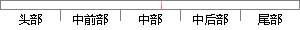

从图中可以看出，随着 物体表面温度 的
片段位置图

相似结果
相似片段：
行了优化。通过增加翅片尺寸、数量等方法来增加散热面积,以增加与空气的换热量。图12给出了稳态时芯片上最高温度随散热器翅片数量的变化情况。从图中可以看出,随着翅片数的增多,Maximum temperature/℃ Maximum temperature/℃ 图12摇 Fig. 12摇 200 180 160 140 120 100 12 （a） 170 （b） 160 150 140 130 120 110 100 90 80 70 6 16 20 24 28 32 36 40 Number of fins
| 对比库： | 已发表资源库 |
| 来源： | "Thermal Field Analysis and Heat Dissipation Design of AlGaInP-based LED Light Emitting Array", Chinese Journal of Luminescence, 2015. 查看来源 |
| 相似率 | 57.14% （轻度抄袭） |